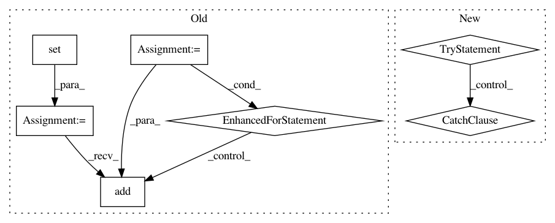

c83f6f17866a3d114c174ba282e4dff2fd9996f7,src/python/pants/cache/artifact.py,TarballArtifact,extract,#TarballArtifact#,111
Before Change
// This actually happened, and was very hard to debug.
// Creating the paths here up front allows us to squelch that "File exists" error.
paths = []
dirs = set()
for tarinfo in tarin.getmembers():
paths.append(tarinfo.name)
if tarinfo.isdir():
dirs.add(tarinfo.name)
else:
dirs.add(os.path.dirname(tarinfo.name))
for d in dirs:
try:
os.makedirs(os.path.join(self._artifact_root, d))
except OSError as e:
After Change
def extract(self):
// Note(yic): unlike the python implementation before, now we do not update self._relpath
// after the extraction.
try:
self.NATIVE_BINARY.decompress_tarball(self._tarfile.encode("utf-8"),
self._artifact_root.encode("utf-8"))
except Exception as e:
raise ArtifactError("Extracting artifact failed:\n{}".format(e))
In pattern: SUPERPATTERN
Frequency: 3
Non-data size: 7
Instances
Project Name: pantsbuild/pants
Commit Name: c83f6f17866a3d114c174ba282e4dff2fd9996f7
Time: 2018-11-18
Author: wisechengyi@gmail.com
File Name: src/python/pants/cache/artifact.py
Class Name: TarballArtifact
Method Name: extract
Project Name: eth-cscs/reframe
Commit Name: 639af9a9c1bf22a02fed70ea4286510ac4a02297
Time: 2019-11-20
Author: manitaras@cscs.ch
File Name: reframe/core/schedulers/slurm.py
Class Name: SlurmJob
Method Name: get_all_nodes
Project Name: pyinstaller/pyinstaller
Commit Name: 98100abde55f1fb0ab455f95b9259c3adcdbab2c
Time: 2015-10-19
Author: h.goebel@crazy-compilers.com
File Name: PyInstaller/building/imphook.py
Class Name: ImportHook
Method Name: _process_excludedimports